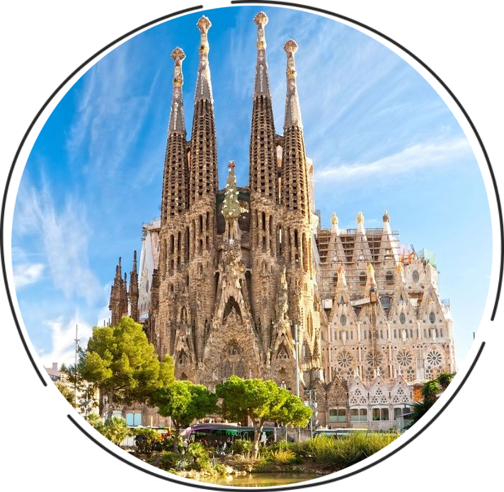
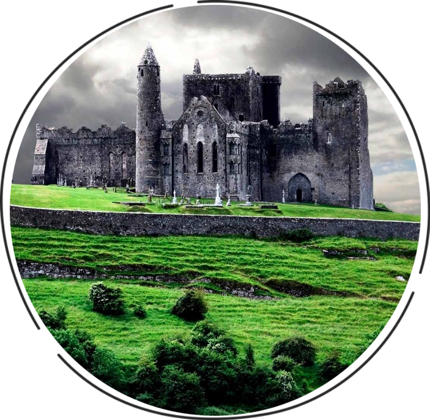

Испания

«В Испании никогда ничего нельзя предугадать». Так писал об этой замечательной стране Эрнест Хемингуэй в своем знаменитом романе «Фиеста». Наверное, именно такой Испания представляется каждому, кто хоть однажды здесь побывал – зажигательный фламенко под завораживающие звуки гитар и кастаньет, опасная коррида под рев переполненных трибун, пьянящий аромат хереса и ярчайшее, ласковое солнце. Здесь всё непредсказуемо и вечно. Отзвуки великой истории, памятники древних цивилизаций, поражающие воображение архитектурные шедевры Гауди, величественные средневековые замки, мировая сокровищница искусств – музей Прадо, уникальная эстетика музея-театра Сальвадора Дали, и, конечно – прозрачное лазурное море, более двух тысяч чудесных пляжей, могучие вершины Пиренеев, уютные старинные города, и необычайно красивые ландшафты, наполненные щедростью испанской земли и радушием её жителей.
Ирландия

На самом краю Европы удобно расположился небольшой удивительно красивый остров, который с легкой руки влюбленных в него путешественников в мире стали называть Изумрудным.Ирландия – сказочно красивый край, страна древних кельтов, потомки которых до сих пор живут здесь и бережно хранят свою самобытную многовековую культуру. Это земля вечной весны, которой не знакомы суровые зимние холода и изнуряющая летняя жара. Жизнь тут на редкость спокойна, и неспешно течет по привычному руслу. Повсюду в Ирландии ощущается некая магическая энергетика, которая пленяет и завораживает путешественников. Достаточно однажды попасть сюда, чтобы навсегда влюбиться в этот удивительный мир, не похожий ни на один уголок нашей огромной многообразной планеты.